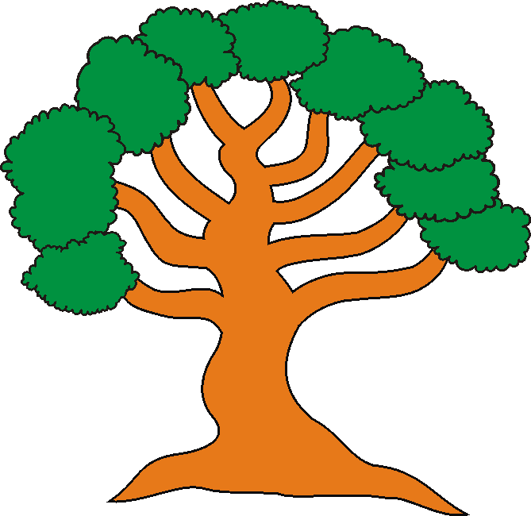

Árvore Genealógica
Verifique os
dados, após o desenho da árvore, que nos deverão ser
fornecidos
para que a sua árvore seja completada.
As informações deverão ser enviadas para: felipenicolau@felipenicolau.com.br

A árvore genealógica é construída
de forma que apareçam as duas raízes principais - Bisavós;
o tronco - Avós; os ramos - Netos, e os sub-ramos - Bisnetos.
A partir deste estágio os nomes aparecerão nas árvores
específicas de cada sub-ramo - Bisnetos.
Para que os dados de alguém da família possa
aparecer como tronco em uma árvore genealógica separada,
é necessário enviar as informações abaixo relacionadas:
1o. (Tronco)
Nome e Sobrenome - Data do nascimento e/ou falecimento e local.
(Raízes)
Nome e Sobrenome do Pai - Data do nascimento e/ou falecimento e local.
Nome e Sobrenome da Mãe - Data do nascimento e/ou falecimento e local.
2o.(Tronco)
Nome e Sobrenome da Espôsa - Data do nascimento e/ou falecimento e local.
(Raízes)
Nome e Sobrenome do Pai da espôsa - Data do nascimento e/ou falecimento
e local.
Nome e Sobrenome da Mãe da espôsa - Data do nascimento e/ou falecimento
e local.
3o. (Ramos)
Nome e Sobrenome de todos os filhos - Data do nascimento e/ou falecimento
e local.
Nome e Sobrenome de todas as filhas - Data do nascimento e/ou falecimento
e local.
4o. (Para a Relação dos maridos e das esposas)
Nome e Sobrenome de todas as esposas dos filhos - Data do nascimento e/ou
falecimento e local.
Nome e Sobrenome de todos os maridos das filhas - Data do nascimento e/ou
falecimento e local.
5o. (Sub-Ramos)
Nome e Sobrenome de todos os netos - Data do nascimento e/ou falecimento e
local.
Nome e Sobrenome de todas as netas - Data do nascimento e/ou falecimento e
local.
Envie os dados para: felipenicolau@felipenicolau.com.br